2. Enter your unique BYU-Pathway email on the following page and click "Next". If you don't know your BYU-Pathway email, enter "portal@byupathway.edu" and click "Next".
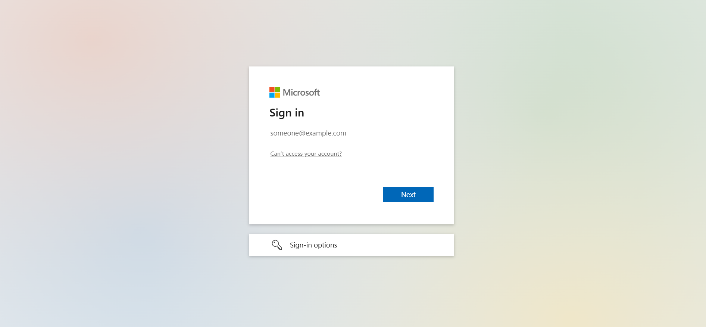
3. Enter your path username and your password and click "Next".
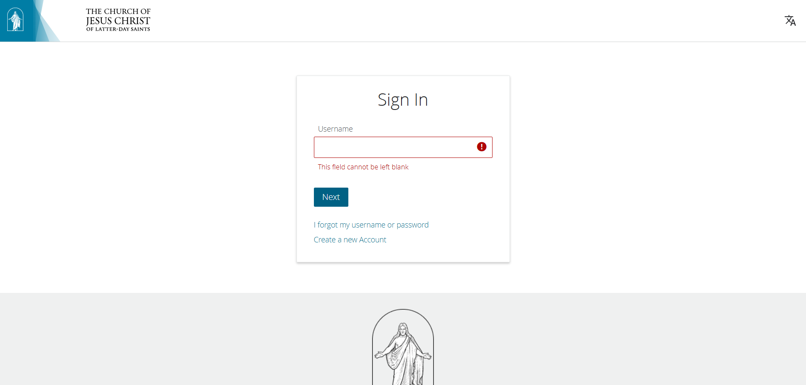
4. You will log in successfully if you enter your username and password correctly.
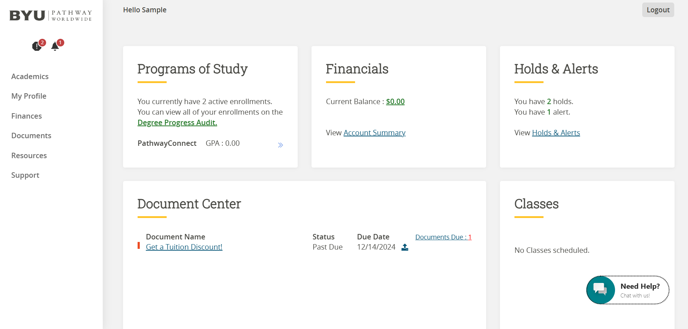
5. To register your classes for the next term, you must resolve all holds in your portal. To see a list of holds in your portal, click the notification icon and click "Registration".
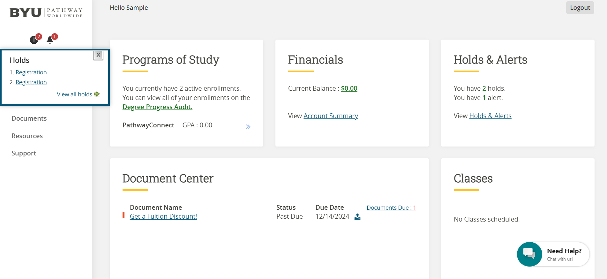
6. See the list of holds in your portal and how to resolve them. Click "Academics" and click "Gatherings" to resolve the holds.
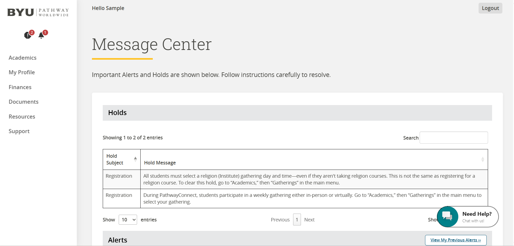
7. Click the "Schedule" button to choose a time for your PathwayConnect and Religion gatherings.
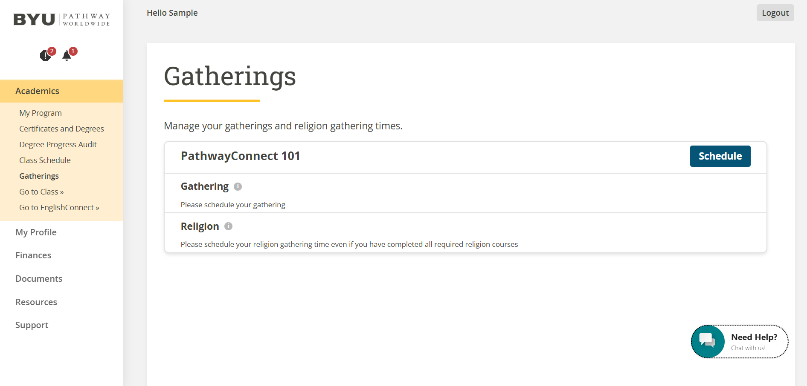
8. Select "Virtual" or "In-person" base on your preference and select the time of your gathering. If you are unable to attend the in-person gatherings, please select virtual to attend the online gatherings.
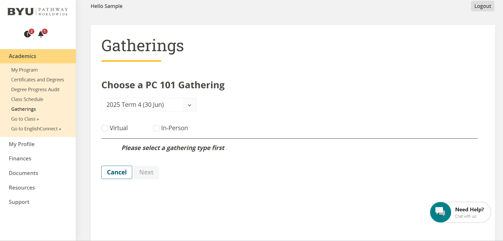
9. Select the dropdown arrow under "Select Location" to select the place and time of your gathering. Please select a place or country where you live.
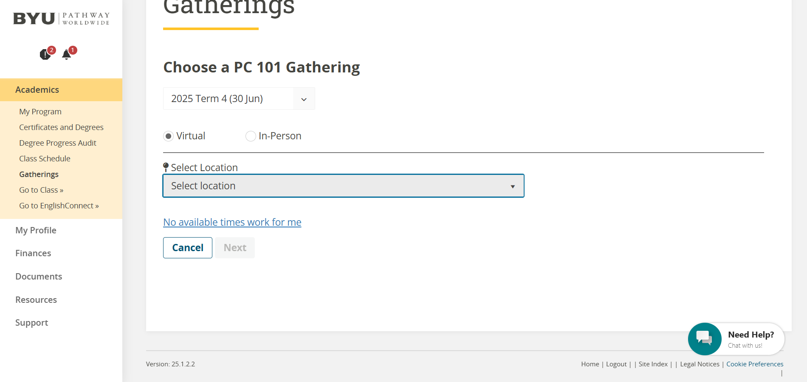
10. Do the same for the Religion Gathering and select a gathering time for your Religion Gathering.
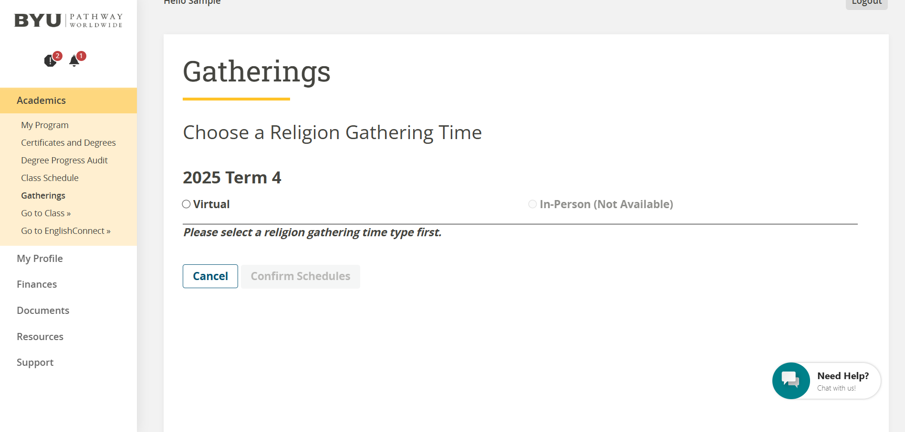
11. To register for your classes for the next term, click "Academics" and click "Class Schedule". Then click the "Register" button to register for your classes.
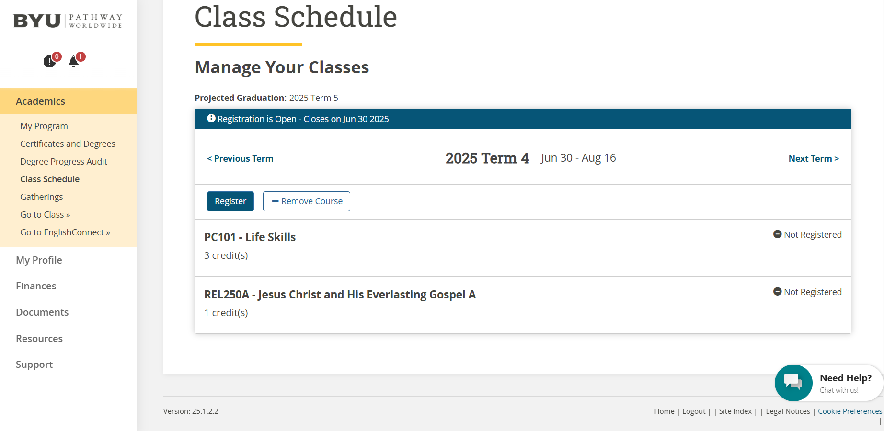
12. If there are no classes for the current term, click "Next Term" to register classes for the next term.
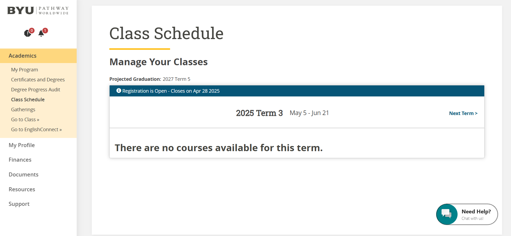
13. After you have successfully register for your classes, wait for the term to begin to start your classes. Normally, courses will be available in Canvas few days prior to the term starting.
14. To go to your classes, click "Academics" and click "Go to Class" to access your classes in Canvas.
15. If you have followed the instructions correctly, you have successfully
registered your classes for the next term. Congratulations! Click here
to see a list of certificates and degrees offered through BYU-Pathway Worldwide.